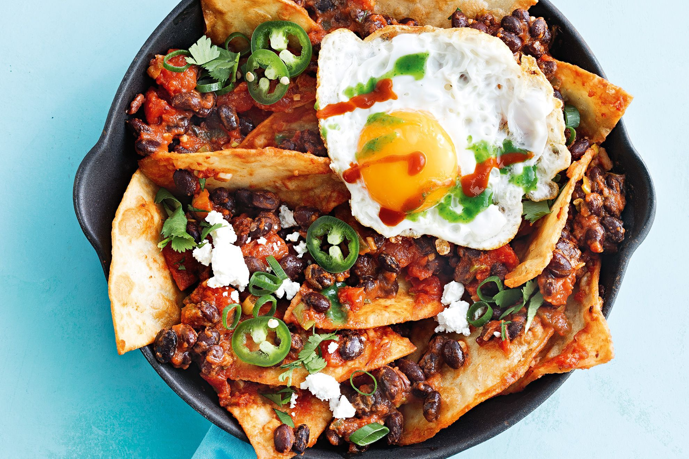

CHILAQUILES

INGREDIENTS
- 6 corn tortillas, cut into triangles
- 1/2 cup vegetable oil
- 1/2 onion, diced
- 1 garlic clove, minced
- 1 can (14.5 oz) diced tomatoes
- 1/2 teaspoon salt
- 1/4 teaspoon black pepper
- 1/2 teaspoon cumin
- 1/4 teaspoon chili powder
- 4 eggs
- 1/4 cup crumbled queso fresco (or feta cheese)
- 2 tablespoons chopped cilantro
INSTRUCTIONS
- In a large skillet, heat vegetable oil over medium-high heat.
- Fry the tortilla triangles in batches until golden brown and crispy, about 1-2 minutes per side.
- Remove with a slotted spoon and set aside on a paper towel-lined plate to drain excess oil.
- In the same skillet, sauté the onion and garlic until soft, about 2-3 minutes.
- Add the diced tomatoes, salt, black pepper, cumin, and chili powder to the skillet. Cook for about 5 minutes,
stirring occasionally.
- Add the fried tortilla triangles to the skillet and stir to coat in the tomato mixture.
- Crack the eggs over the tortilla mixture and cook until the whites are set but the yolks are still runny, about 3-4 minutes.
- Sprinkle the crumbled queso fresco and chopped cilantro over the top of the chilaquiles.
- Serve hot and enjoy!